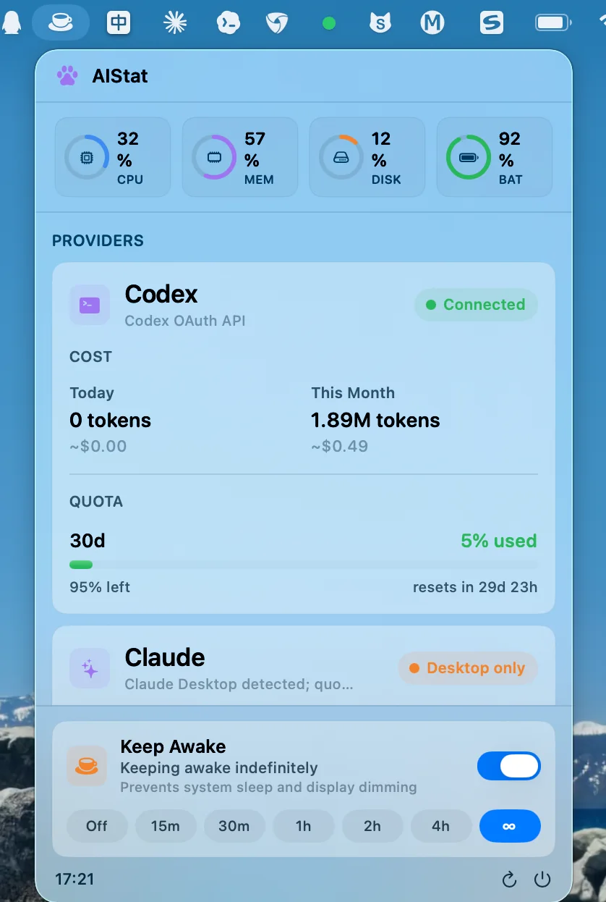

AI 预算
Codex 额度、Token 用量和成本概览；有本地数据源时同时显示 Claude 额度。刷新失败时沿用上一次成功的结果，不会突然变空白。
macOS 菜单栏应用 · SwiftUI · macOS 14+
把 Codex、Claude 的额度与成本、本机 CPU、内存、磁盘和电池，以及 Keep Awake 防睡眠开关，收进菜单栏里的一个面板。不用再在几个应用之间来回切换。

01 / 功能
适合每天开着 Claude Code、Codex 跑任务的 macOS 开发者。
Codex 额度、Token 用量和成本概览；有本地数据源时同时显示 Claude 额度。刷新失败时沿用上一次成功的结果，不会突然变空白。
CPU、内存、磁盘、电池四个环形指标，外加磁盘读写速度，点开可查看详情。
15 分钟到永久七档可选，同时阻止空闲睡眠和屏幕变暗。菜单栏图标会跟着状态变化。
02 / 数据来源
每个 Provider 都有一条按顺序降级的读取链。窗口是 30 天就显示 30d，不会硬套成 5h 或 Week。
03 / 安装
需要 macOS 14 或更新版本。想自己构建的话，用 Xcode 打开工程即可运行。
.dmg。AIStat.app 拖进“应用程序”文件夹。DMG 目前还没有经过 Apple 公证，所以首次启动需要右键打开。之后正常双击即可。
04 / 开始使用